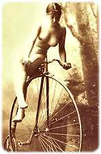

ParaBicychologie
ParaBicychologie
© Copyright - administrateur Bicy Gonzo.

- Accueil >>> Index des textes traduits par : Bicy Gonzo
Lecture avant-lecture : nous vous proposons avant de lire nos traductions, de lire le court récit publié en 1997 Le Droit De Lire, de Richard Stalman, programmeur, fondateur de la Free Software Foundation : Lien vers le texte.
Un texte prémonitoire...

Index des traductions hébergées par : Bicy Gonzo et la bicyclette de plus, la bicyclette littéraire

Prestations gratuites de traductions par notre partenaire officieux * :
Brothel & Cie inc.® ™
Textes traduits de l'espagnol.
# # #
Traduction sous une licence Creative Commons http://creativecommons.org/licenses/by-nc-sa/3.0/es/deed.fr
Textes traduits de l'anglais.
# # #
A suivre . . .
* Le matériel ci-dessus nous a été envoyé électroniquement par Brothel & Cie inc.® ™ sans plus de précision. Nous avons décidé de poster ces textes sur ce site web dans le même esprit que celui dans lequel ils ont été traduits et édités, c'est à dire dans l'esprit du libre échange de connaissances et d'informations pertinentes et / ou utiles et / ou de la culture. Nous n'avons pas reçu, et ne recevrons aucune compensation financière ou autre pour l'hébergement de ces textes.
© Copyright - administrateur Bicy Gonzo.